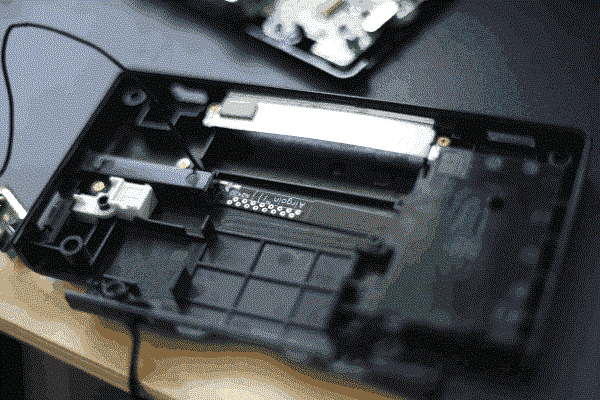
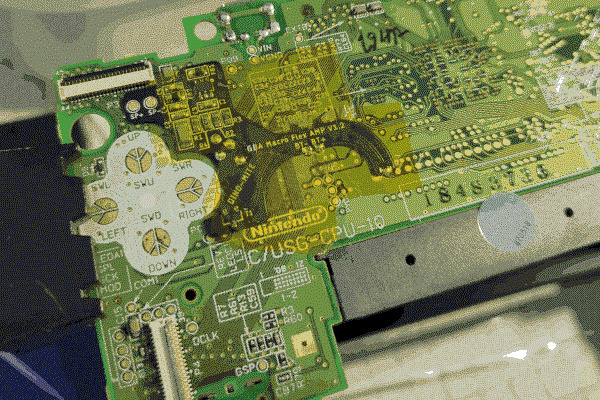
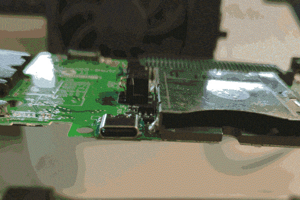

DS Project
The Nintendo DS is a 32bit handheld computer system released by Nintendo in 2004. The initials "DS", more commonly understood to represent "dual system", also designate "developer system".
At the time of writing, the NDS remains the handheld game console that has sold the most units (154.02 million units), meaning they are low cost and easy to obtain parts for, and therefore a desirable option for modding and experimentation.
The availability of flashcarts, and the creation and maintenance of development tools within the extensive development community also makes them an optimal system for developing software to leverage features built into the system (e.g. 3D engine, networking connectivity, dual processor, slot-2 expansion functionality).
Here I document explorations of a system that has prompted much reflection for me on what a handheld personal computer could be.
HARDWARE:
Partly to upskill my soldering, but mostly to have a portable experimentation platform, I've put together a "gameboy macro" using old DS lite
parts (motherboards/units with broken top screen are very cheap).
Internally, I've used a Helder Flex PCB, as well as a USB-C charging port from jamo_mods.
Whilst in most DS macro builds the wifi antenna (which resides in the top screen) is removed, in order allow experimentation with the DS's wifi capabilities in the future, I found an "aftermarket" wifi antenna the matched the spec online, and created space in the shell by modifying the brace that usually holds the stylus.



Externally, there an aluminium faceplate and glass screen protector from Boxypixel.
I've managed to fry several DS lite motherboards over the course of my experimentations, but I've found tinkering with DS hardware to be immensely helpful for developing my modding skills, and for feeding my curiosity about how computers work.
FLASHCARTS:
- N5DS
- R4DS
SOFTWARE:
- Display Bitmap
- Display Tiles
- Timer
- Sound
- 3D & Procedural Generation
- 3D Collision system
FUTURE PROJECTS:
- Maxmod
- dual processor
- wifilink
RESOURCES:
Devkitpro
Problematek
mtheall's DS VRAM BG Allocation Conflict Viewer